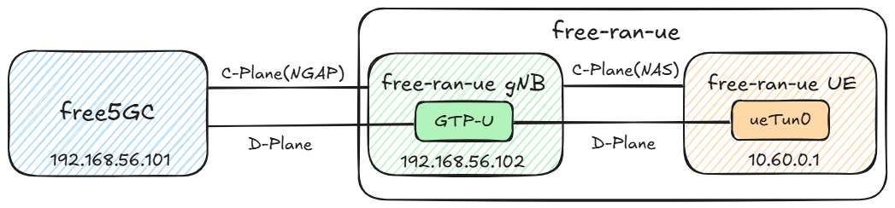

Deployment of free5GC and free-ran-ue
Note
Author: Che Wei Lin
Date: 2026/09/02
In this demo we will practice:
- Installing free5GC and free-ran-ue
- Configuring free5GC, the gNB, and the UE
- Running free-ran-ue against free5GC
Topology:

1. Install free-ran-ue VM
Repeat the steps of cloning free5gc VM from the base VM, create a new VM for the free-ran-ue simulator:
- Name the VM
free-ran-ue, and create new MAC addresses for all network cards. - Make sure the VM has internet access and can log in using SSH.
- Change the hostname to
free-ran-ue. - Make the Host-only network interface have static IP address
192.168.56.102. - Reboot the free-ran-ue VM, as well as the free5gc VM.
You can ping192.168.56.101from the free-ran-ue VM, and also ping192.168.56.102from the free5gc VM.
2. Install free-ran-ue
Perform the following installation steps on the free-ran-ue VM.
Install Go and Required Tools
The version of free-ran-ue used in this guide requires Go 1.26.2. First install the required tools:
sudo apt update
sudo apt install -y git make iproute2 wget
If go version does not show go1.26.2 linux/amd64, install Go 1.26.2:
cd /tmp
wget https://dl.google.com/go/go1.26.2.linux-amd64.tar.gz
sudo rm -rf /usr/local/go
sudo tar -C /usr/local -xzf go1.26.2.linux-amd64.tar.gz
echo 'export GOPATH=$HOME/go' >> ~/.bashrc
echo 'export GOROOT=/usr/local/go' >> ~/.bashrc
echo 'export PATH=$PATH:$GOPATH/bin:$GOROOT/bin' >> ~/.bashrc
source ~/.bashrc
go version
Clone and Build free-ran-ue
-
Clone
git clone https://github.com/free-ran-ue/free-ran-ue.git -
Build
cd free-ran-ue make
The executable is ~/free-ran-ue/build/free-ran-ue
3. Install free5GC WebConsole
free5GC provides a simple web tool WebConsole to help creating and managing UE registrations to be used by various 5G network functions (NF).
If WebConsole isn't installed yet, please, SSH into free5gc's VM and follow the instructions contained on this section here.
4. Use WebConsole to Add an UE
First activate free5GC then start up the webconsole server at another terminal:
cd ~/free5gc/webconsole
go run server.go
The screen shows the port number :5000 at the end. Open your web browser from your host machine, and enter the URL http://192.168.56.101:5000
- On the login page, enter username
adminand passwordfree5gc. - Once logged in, widen the page until you see “Subscribers” on the left-hand side column.
- Click on the
Subscriberstab and then on theCreatebutton - Scroll all the way down and click
Createagain - You can view more tutorials through this link.
Note
You have to make sure that the parameters on the webconsole are consistent with the UE settings at free-ran-ue's ue.yaml.
5. Configure free5GC and free-ran-ue
Configure free5GC
In free5gc VM, we need to edit three files:
~/free5gc/config/amfcfg.yaml~/free5gc/config/smfcfg.yaml~/free5gc/config/upfcfg.yaml
First SSH into free5gc VM, and change ~/free5gc/config/amfcfg.yaml:
Replace ngapIpList IP from 127.0.0.1 to 192.168.56.101, namely from:
...
ngapIpList: # the IP list of N2 interfaces on this AMF
- 127.0.0.1
into:
...
ngapIpList: # the IP list of N2 interfaces on this AMF
- 192.168.56.101 # 127.0.0.1
Next edit ~/free5gc/config/smfcfg.yaml:
In the entry inside userplaneInformation / upNodes / UPF / interfaces / endpoints, change the IP from 127.0.0.8 to 192.168.56.101, namely from:
...
interfaces: # Interface list for this UPF
- interfaceType: N3 # the type of the interface (N3 or N9)
endpoints: # the IP address of this N3/N9 interface on this UPF
- 127.0.0.8
into:
...
interfaces: # Interface list for this UPF
- interfaceType: N3 # the type of the interface (N3 or N9)
endpoints: # the IP address of this N3/N9 interface on this UPF
- 192.168.56.101 # 127.0.0.8
Finally, edit
~/free5gc/config/upfcfg.yaml，and change gtpu IP from 127.0.0.8 into 192.168.56.101, namely from:...
gtpu:
forwarder: gtp5g
# The IP list of the N3/N9 interfaces on this UPF
# If there are multiple connection, set addr to 0.0.0.0 or list all the addresses
ifList:
- addr: 127.0.0.8
type: N3
into:
...
gtpu:
forwarder: gtp5g
# The IP list of the N3/N9 interfaces on this UPF
# If there are multiple connection, set addr to 0.0.0.0 or list all the addresses
ifList:
- addr: 192.168.56.101 # 127.0.0.8
type: N3
Configure the free-ran-ue
In free-ran-ue VM, we need to edit two files:
First edit ~/free-ran-ue/config/gnb.yaml with the following changes, from:
gnb:
amfN2Ip: "10.0.1.1"
ranN2Ip: "10.0.1.2"
upfN3Ip: "10.0.1.1"
ranN3Ip: "10.0.1.2"
ranControlPlaneIp: "10.0.2.1"
ranDataPlaneIp: "10.0.2.1"
...
api:
ip: "10.0.1.2"
port: 40104
into:
gnb:
amfN2Ip: "192.168.56.101" # 10.0.1.1
ranN2Ip: "192.168.56.102" # 10.0.1.2
upfN3Ip: "192.168.56.101" # 10.0.1.1
ranN3Ip: "192.168.56.102" # 10.0.1.2
ranControlPlaneIp: "192.168.56.102" # 10.0.2.1
ranDataPlaneIp: "192.168.56.102" # 10.0.2.1
...
api:
ip: "192.168.56.102" # 10.0.1.2
port: 40104
Then modify ~/free-ran-ue/config/ue.yaml with the following changes, from:
ue:
ranControlPlaneIp: "10.0.2.1"
ranDataPlaneIp: "10.0.2.1"
into:
ue:
ranControlPlaneIp: "192.168.56.102" # 10.0.2.1
ranDataPlaneIp: "192.168.56.102" # 10.0.2.1
7. Start free5GC and free-ran-ue
Use the following startup order:
free5GC Core -> free-ran-ue gNB -> free-ran-ue UE
-
SSH into free5gc. If you have rebooted free5gc, remember to run:
sudo sysctl -w net.ipv4.ip_forward=1 sudo iptables -t nat -A POSTROUTING -o <dn_interface> -j MASQUERADE sudo iptables -A FORWARD -p tcp -m tcp --tcp-flags SYN,RST SYN -j TCPMSS --set-mss 1400 sudo systemctl stop ufw sudo systemctl disable ufw # prevents the firewall to wake up after a OS reboot
Or usereload_host_config.shfrom free5GC
sudo ./<PATH-TO-free5GC>/reload_host_config.sh <dn_interface> # Example sudo ./free5gc/reload_host_config.sh enp0s3 -
Then start the gNB in the first terminal on the free-ran-ue VM:
cd ~/free-ran-ue
./build/free-ran-ue gnb -c config/gnb.yaml
- Keep the gNB terminal running. Open a second terminal on the free-ran-ue VM, then start the UE:
cd ~/free-ran-ue
sudo ./build/free-ran-ue ue -c config/ue.yaml
8. Run the Ping Test
On the free-ran-ue VM, send ICMP traffic through ueTun0:
ping -I ueTun0 8.8.8.8 -c 5
If the test succeeds, the source address is from the free5GC 10.60.0.0/16 pool:
PING 8.8.8.8 (8.8.8.8) from 10.60.0.1 ueTun0: 56(84) bytes of data.
64 bytes from 8.8.8.8: icmp_seq=1 ttl=116 time=4.01 ms
64 bytes from 8.8.8.8: icmp_seq=2 ttl=116 time=3.92 ms
...
5 packets transmitted, 5 received, 0% packet loss